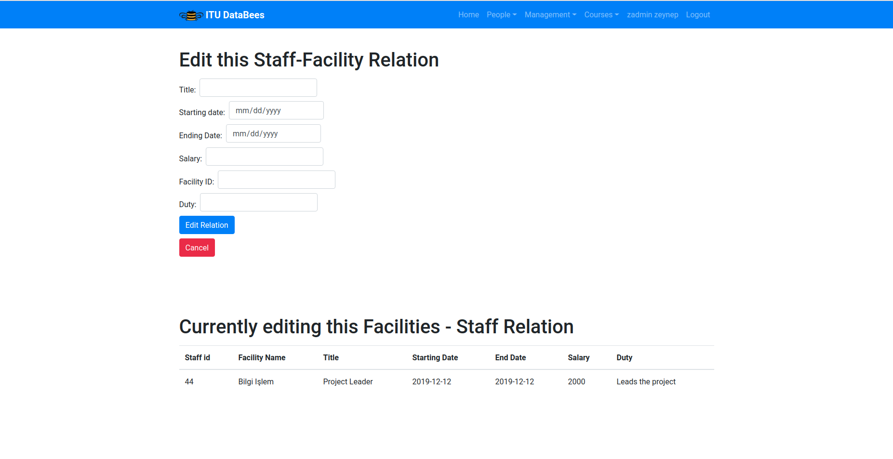
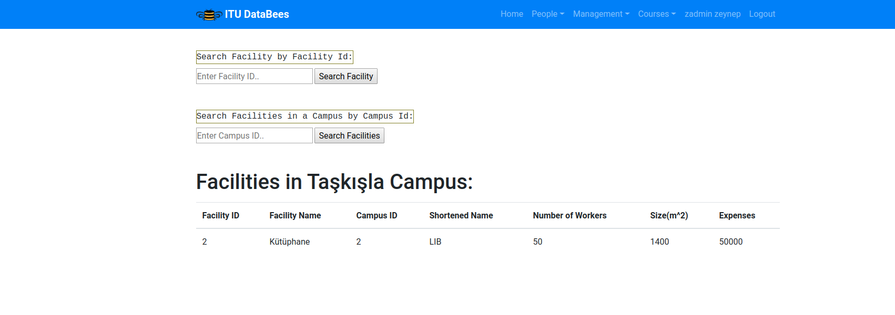

Parts Implemented by Zeynep Yetiştiren¶
Tables¶
Staff, Facility and Staff-Facility tables are implemented by this member.
Pages¶
Only admins can see and make changes on these table pages. Student accounts do not have any permissions.
Every tables have its own add, delete, update and search functionalities. User interface kept simple to make usage easy. User can change between pages with the corresponding buttons.
In general, tables have list page, add/search page and update/delete pages.
Staff Page¶
This page is the beggining of the Staff pages. This page can be accessed from the People Menu at the navigation bar. On this page, admins can view a list of staffs and their information in the database, add a new staff or search a specific staff by staff id . Input validation is being done.
Staff ids must be unique for each staff.
Entered staff id must be in present in the people table.
Fields other than staff id are optional.
Manager name and department attributes cannot be longer than 40 chars.
Staff Search Result Page¶
On this page, admins can see results for the search function from the first page. If there is no staff with the entered staff id, page gives a warning message. If the staff is found, page gives a success message and display the information about the staff. Information is taken from both staff table and people table.
If staff is found, user can delete, update or get information about the facilities where the staff works.
More information button redirects the user to the Staff-Facility pages.
For Update:
Staff ids must be unique for each staff.
Entered staff id must be in present in the people table.
Fields other than staff id are optional.
Manager name and department attributes cannot be longer than 40 chars.
There is no restriction for the delete operation.
Staff-Facility Page¶
On this page, admins can see the general information of the staff found from previous page and the facilities where this staff works are listed below it. User can add, edit or delete staff-facility relations. Edit button directs the user to the edit_staff_facility page.
Also user can still search a new staff by id with the search box at the top of the page or delete the given staff.
For Addition:
Staff id-Facility id pair must be unique for each staff.
Facility id must exist in the facility table
Staff id must exist in the staff table
Other fields are optional.
Title and Duty attributes cannot be longer than 20 chars.
There is no restriction for the delete operation.
Staff-Facility Update Page¶
On this page, admins can update the Staff-Facility relation from the previous page. Below the update form, details about which relation the user is editing is shown. Or they can cancel the operation and go back to the previous page.
For Update:
Staff id-Facility id pair must be unique.
Facility id must exist in the facility table
Staff id must exist in the staff table
Other fields are optional.
Title and Duty attributes cannot be longer than 20 chars.
Update Staff-Facility Relation Form¶
Facility Page¶
On this page, admins can view the facility list and add new facilities to the database. Also, they can search a facility by facility id or search by campus id and see all the facilities in the specified campus. This page can be accessed from the Management Menu at the navigation bar.
For Addition:
Facility IDs must be unique.
Campus id must exist in the campus table.
Facility Search by Facility ID Result Page¶
On this page, if facility search is successfull, admins can view the details about the searched facility, delete or update this facility. If there is no facility with the entered facility id, page gives a warning message.
For Update:
Staff id-Facility id pair must be unique for each staff.
Facility id must exist in the facility table
Staff id must exist in the staff table
Other fields are optional.
Name attribute cannot be longer than 40 chars.
Shortened name attribute cannot be longer than 6 chars.
There is no restriction for the delete operation.
Facility Search by Campus ID Result Page¶
On this page, if campus search is successfull, admins can view the list of the facilities in a given campus. Also, they can still search a facility or campus from the text boxes at the top of the page. If there is no campus with the entered campus id, page gives a warning message.
Facilities in a given Campus¶